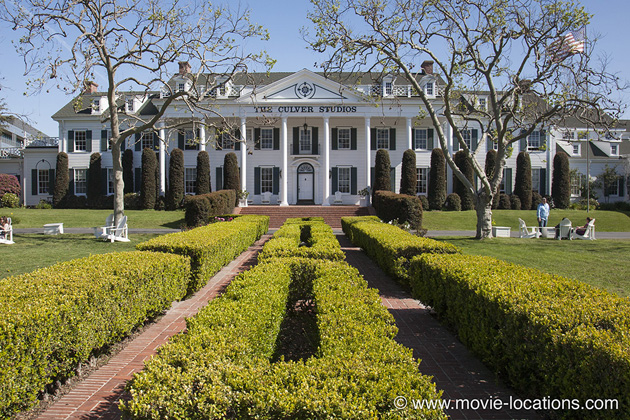
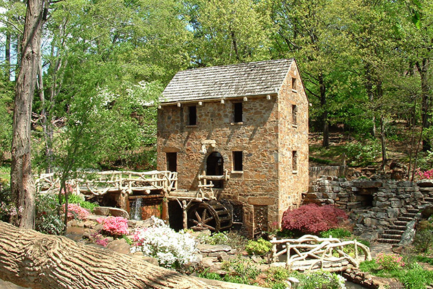

Gone With The Wind
Main Content

Although people still arrive in Atlanta expecting to visit Scarlett O'Hara’s Deep South estate, not a single scene of the classic film was shot in Georgia.
Virtually all the movie was filmed at what was then the Selznick International Studios. This studio, built by DW Griffith’s contemporary and early innovator Tom Ince in 1916, passed into various hands over the years. In 1924 it was Pathe Studios, in 1925 the DeMille Studios (King of Kings was made here in 1927), in 1931 RKO-Pathe (when King Kong was filmed here). Later, in 1957, it became Desilu-Culver (under the ownership of Desi Arnaz and Lucille Ball) and later still just Culver Studios. Most of Steven Spielberg's E.T. was filmed here.

You'll probably recognise it as the mansion seen before the titles of classic David O Selznick productions. It's at 9336 Washington Boulevard between Ince and Van Buren, Culver City. The Washington Boulevard entrance appears as the grand approach to the ‘big new house in Atlanta’ into which Scarlett and Rhett move after their marriage. The building itself is heavily disguised with a matte painting (a painting on glass placed in front of the camera, used before effects could be achieved with CGI), but the formal lawns, and the path with its central hedge, remain virtually unchanged.
The stuio frontage is also seen as the 'Cheyne Mansion' at the opening of Victor Fleming's 1937 Captains Courageous, with Freddie Bartholomew and Oscar-winning Spencer Tracy.
One of the earliest shots in the can was the burning of ‘Atlanta’, so early, in fact, that Scarlett O’Hara hadn’t yet been cast – so legend has it. Vivien Leigh supposedly arrived during filming and instantly secured the part. Well it makes a good story, and this is Hollywood, so why not print the legend?
What went up in flames in the scene was the old Selznick backlot, in a massive space-clearing operation. You can plainly see the giant gates of King Kong’s ‘Skull Island’ – strangely out of place in Civil War-era ‘Atlanta’ – during the conflagration.
The few locations include the barbecue at ‘Twelve Oaks’, which used the long-gone Busch Gardens in Pasadena, an estate built by the Busch brewing family. Remnants of the landscaping can still be seen in gardens of the houses around Arroyo Boulevard between Bellefontaine Street and Madeline Drive (the gardens also stood in for the grounds of ‘Xanadu’ in Citizen Kane).
When Scarlett vows never to go hungry again, it’s an early morning sunrise at Lasky Mesa, Calabasas, northwest of Los Angeles in the Simi Valley. Loads of movies were shot here, including the 1936 film of The Charge of the Light Brigade. The area, between Agoura and Woodland Hills, is now known as the Ahmanson Ranch, and is currently scheduled to be redeveloped. The final horse ride of Gerald O’Hara (Thomas Mitchell) was also filmed at Calabasas.
The attack in Shantytown is at Big Bear Lake at San Bernardino, east of Los Angeles. Gerald’s walk with Scarlett was filmed on the Ruess Ranch, Malibou Lake, near Malibu Creek State Park, between Malibu and Thousand Oaks.
The cotton fields of Tara, and O’Hara’s first horse ride, are around Chico, way up in northern California, some 80 miles north of Sacramento. Filming took place around Bidwell Park, Pentz Road, and Paradise Apple Orchard.
Not surprisingly, several estates lay claim to be the inspiration for ‘Tara’. The staircase was supposedly based on an original at Chretien Point Plantation, about four miles from Sunset, between Lake Charles and Baton Rouge, Louisiana, while the avenue of oaks is based on one at Boone Hall Plantation, seven miles north of Charleston, near US17, South Carolina (one of the estates seen in the 2004 film of Nicholas Sparks romance The Notebook).
One briefly glimpsed location is North Little Rock Mill, the picturesque watermill seen at the opening of the film. You can find it in TR Pugh Memorial Park on Lakeshore Drive, in North Little Rock, Arkansas, across the Arkansas River from Little Rock itself. Despite its quaint appearance, the mill was actually built in the Thirties and so was brand new at the time of filming. It was deliberately designed to look like a historic part of the landscape.
Visit Info
Visit The Film Locations
California | Los Angeles
Visit: Los Angeles
Flights: Los Angeles International Airport (LAX), 1 World Way, Los Angeles, CA 90045 (tel: 424.646.5252)
Travelling around: Los Angeles Metro
Arkansas
Visit: Arkansas
Visit: North Little Rock Mill, TR Pugh Memorial Park, North Little Rock, AR 72116 (tel: 501.758.1424)